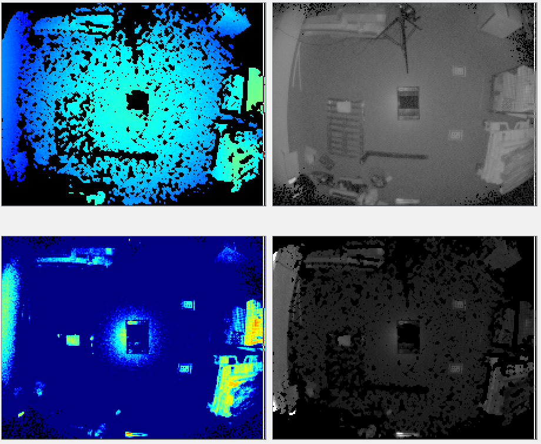
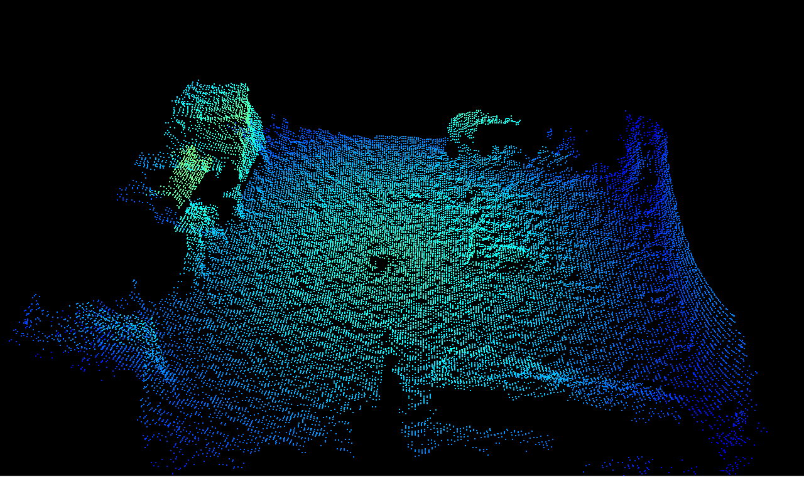
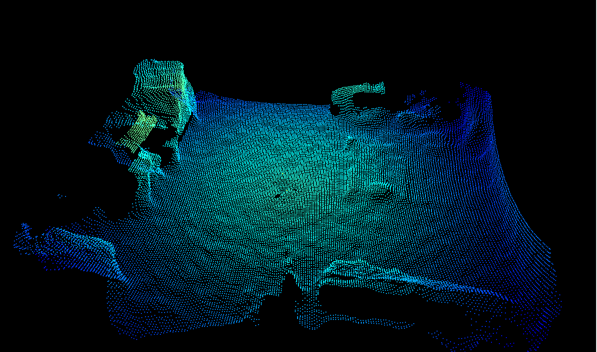

(Spatial) Median Filter
Abstract
The O3R software supports two spatial filters for improving the distance measurements: the median filter and the bilateral filter.
We recommend using the bilateral filter in most cases instead of the median filter because the median filter can have undesirable side effects.
Description
The median filter is conceptually very similar to a median filter applied to RGB 2D images. A median filter is a nonlinear, edge-preserving smoothing filter. It can be thought of as a filter that replaces the value per pixel with the median value of neighboring pixels. The computation is achieved by sliding the filter mask in the spatial domain until it covers the whole image. This filtering technique is robust (i.e., not affected by outliers) and reduces noise while keeping edge information intact. The median filter is applied to the distance image. The distance noise is lowered to heuristically reflect the new noise in the distance image.
The median filter is controlled by the parameter medianSizeDiv2; turn it off with
medianSizeDiv2 = 0.
medianSizeDiv2 = 1 sets the filter mask size to a size of 3 x 3 pixels.
medianSizeDiv2 = 2 is the highest allowed value. It represents a filter mask size of 5 x 5 pixels.
Using larger filter mask sizes combines more pixels’ distance measurements into the filterer value. The filter’ effect will be stronger, resulting in a smoother image.
Note: Invalid pixels are ignored during the filtering process and therefore have no impact on their surrounding pixels. Invalid pixels remain invalid after the filtering.
Example
Below are images of the same scene with different settings for the median filter. Look more specifically at the distance noise image that shows the amount of noise in the scene—the larger the filter mask size, the lower the noise level. The color red corresponds to negligible noise levels and blue to noise around 1 cm and above. See the bilateral filter example for comparison with the same scene.
Filter mask size |
Point cloud |
Distance (top left), amplitude (top right), distance noise (bottom left), and reflectivity (bottom right) images |
|
|---|---|---|---|
0 (filter deactivated) |
|
 |
|
1 (3 x 3 mask size) |
 |
|
|
2 (5 x 5 mask size) |
|
|


Bilateral vs. median filtering
Disadvantages of the median filter
The median filter is not our spatial filter of choice for two reasons: it does not preserve corners of objects as well as the bilateral filter, and it uses a heuristic method for dealing with the distance noise image. Moreover, the median filter can introduce a bias in the distance image (locally) in some cases, an effect that is not present in the bilateral filter. We recommend using the bilateral filter in most cases.
Bilateral and median filters combined
A combination of both spatial filters is rarely required, and we recommend increasing the filter mask size as a first step. However, if the filtering is not strong enough, then one can use both the bilateral and median filters at the same time. This will further reduce local noise levels but can result in bias in larger noise patterns.
To give you an idea, the image below shows the effect of combined bilateral (anfFilterSizeDiv2=3) and median (medianFilterSizeDiv2=2) filtering for the example scene.
